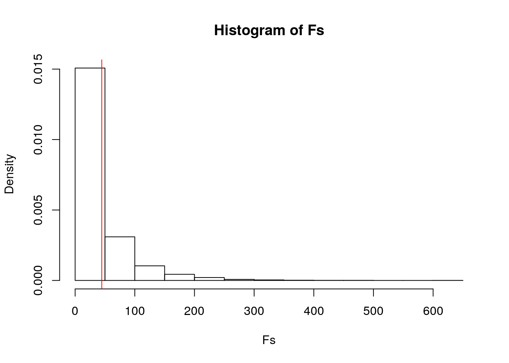
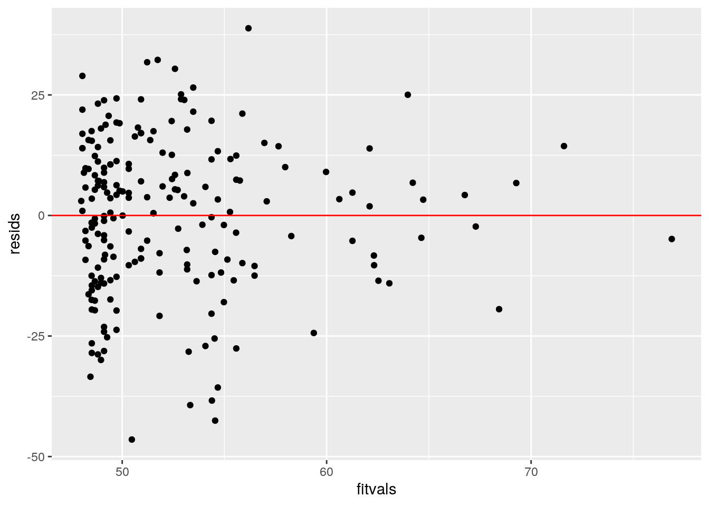
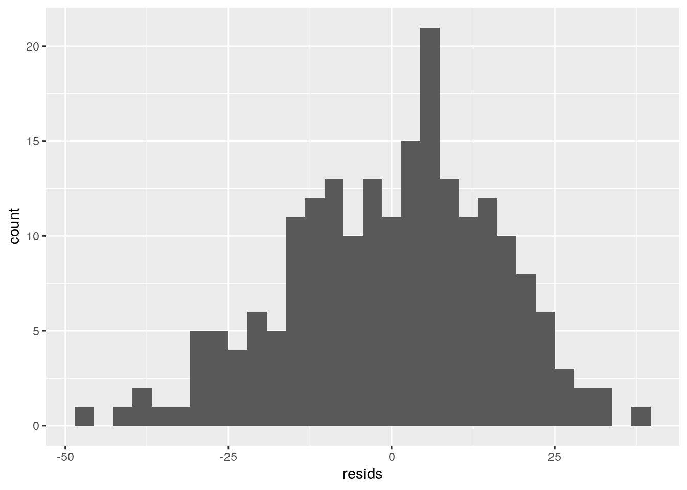
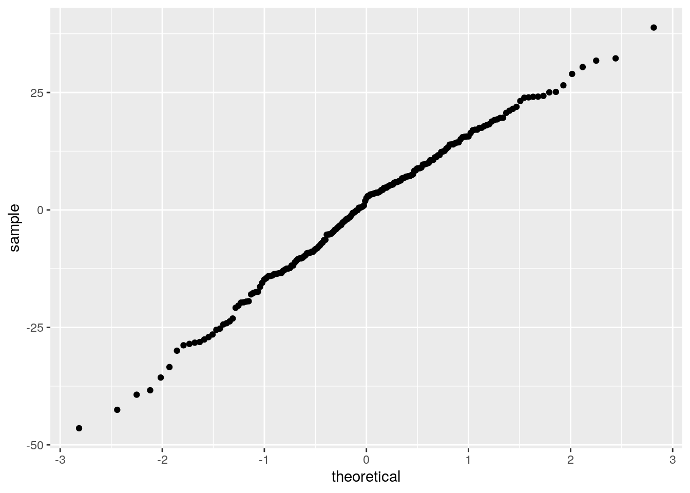
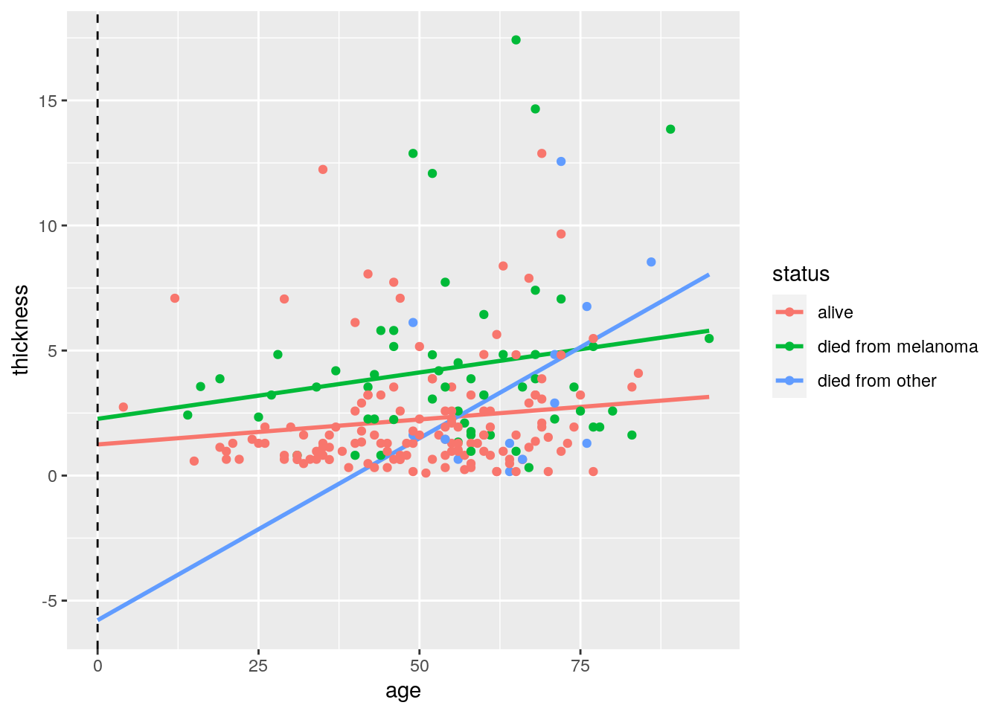
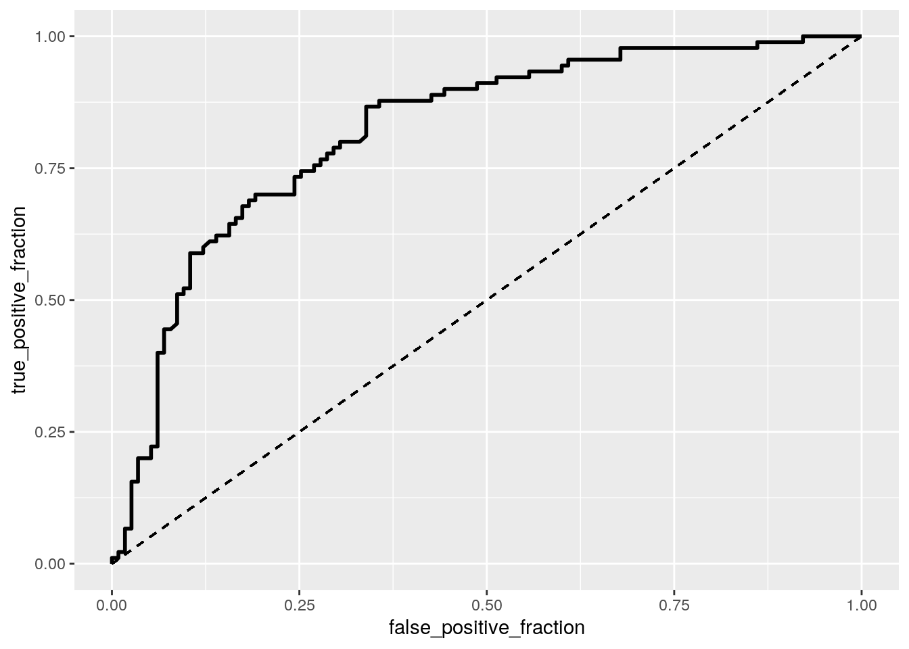
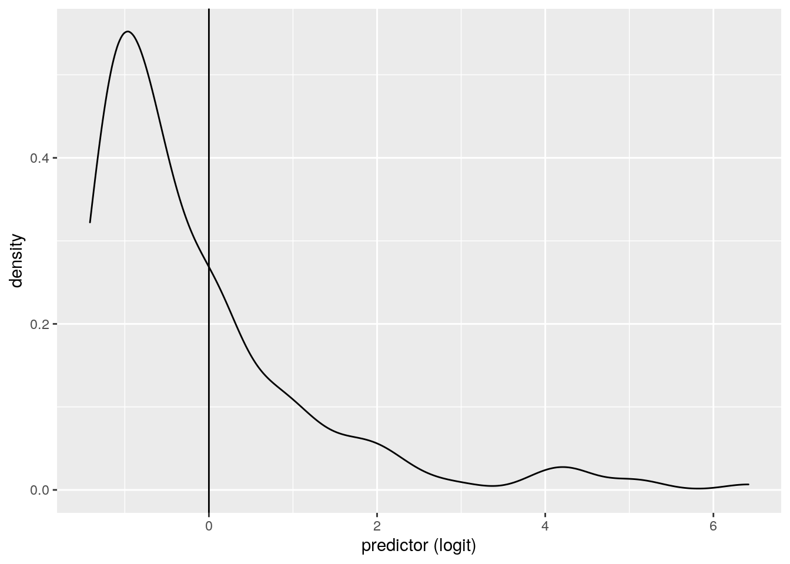
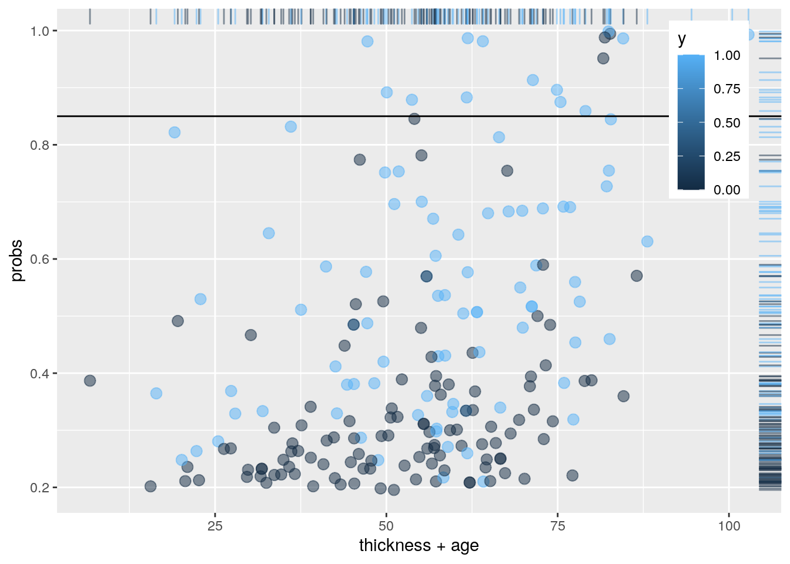

A knitted R Markdown document (preferably HTML) and the raw R Markdown file (as .Rmd) should both be submitted to Canvas by 11:59pm on the due date. These two documents will be graded jointly, so they must be consistent (i.e., don’t change the R Markdown file without also updating the knitted document). Knit an html copy too, for later! In the .Rmd file for Project 2, you can copy the first code-chunk into your project .Rmd file to get better formatting. Notice that you can adjust the opts_chunk$set(...) above to set certain parameters if necessary to make the knitting cleaner (you can globally set the size of all plots, etc). You can copy the set-up chunk in Project2.Rmd: I have gone ahead and set a few for you (such as disabling warnings and package-loading messges when knitting)!
Like before, I envision your written text forming something of a narrative structure around your code/output. All results presented must have corresponding code. Any answers/results/plots etc. given without the corresponding R code that generated the result will not be graded. Furthermore, all code contained in our project document should work properly. Please do not include any extraneous code or code which produces error messages. (Code which produces warnings is fine as long as you understand what the warnings mean.)
r = getOption("repos")
r["CRAN"] = "http://cran.us.r-project.org"
options(repos = r)
install.packages("csv")## Installing package into '/stor/home/aff395/R/x86_64-pc-linux-gnu-library/3.6'
## (as 'lib' is unspecified)library(csv)
library(readr)
Melanoma <- read_csv("melanoma.csv")## Warning: Missing column names filled in: 'X1' [1]## Parsed with column specification:
## cols(
## X1 = col_double(),
## time = col_double(),
## status = col_double(),
## sex = col_double(),
## age = col_double(),
## year = col_double(),
## thickness = col_double(),
## ulcer = col_double()
## )library(dplyr)##
## Attaching package: 'dplyr'## The following objects are masked from 'package:stats':
##
## filter, lag## The following objects are masked from 'package:base':
##
## intersect, setdiff, setequal, unionMelanoma<-Melanoma %>% mutate(sex=recode(sex, "1"="Male", "0"="Female"))
Melanoma<-Melanoma %>% mutate(ulcer=recode(ulcer, "1"="present", "0"="absent"))
Melanoma<-Melanoma %>% mutate(status=recode(status, "1"="died from melanoma", "2"="alive", "3"= "died from other"))This data is made up of 7 variables that look at 205 patients that have malignant melanoma. The first variable is the survival time in days since they had an operation. Status looks at if the patient had passed away from the melanoma, is still alive by the end of the study, or if they had passed away from unrelated causes by the end of the study. Sex indicates whether they identify as a female or male, which is categorical and binary. Age shows how old the patient is when they underwent the operation. Year shows the year the operation happened. Thickness describes the tumor thickness in mm. Ulcer indicates whether they have one or not.
man_sex<-manova(cbind(time, age, year, thickness)~sex, data=Melanoma)
summary(man_sex)## Df Pillai approx F num Df den Df Pr(>F)
## sex 1 0.047283 2.4815 4 200 0.04512 *
## Residuals 203
## ---
## Signif. codes: 0 '***' 0.001 '**' 0.01 '*' 0.05 '.' 0.1 ' ' 1summary.aov(man_sex)## Response time :
## Df Sum Sq Mean Sq F value Pr(>F)
## sex 1 5512308 5512308 4.4523 0.03608 *
## Residuals 203 251327801 1238068
## ---
## Signif. codes: 0 '***' 0.001 '**' 0.01 '*' 0.05 '.' 0.1 ' ' 1
##
## Response age :
## Df Sum Sq Mean Sq F value Pr(>F)
## sex 1 265 264.79 0.9525 0.3303
## Residuals 203 56436 278.01
##
## Response year :
## Df Sum Sq Mean Sq F value Pr(>F)
## sex 1 0.01 0.0095 0.0014 0.97
## Residuals 203 1353.23 6.6662
##
## Response thickness :
## Df Sum Sq Mean Sq F value Pr(>F)
## sex 1 61.42 61.422 7.2272 0.007777 **
## Residuals 203 1725.26 8.499
## ---
## Signif. codes: 0 '***' 0.001 '**' 0.01 '*' 0.05 '.' 0.1 ' ' 1Melanoma%>% group_by(sex)%>% summarize(mean(time), mean(age), mean(year), mean(thickness))## `summarise()` ungrouping output (override with `.groups` argument)## # A tibble: 2 x 5
## sex `mean(time)` `mean(age)` `mean(year)` `mean(thickness)`
## <chr> <dbl> <dbl> <dbl> <dbl>
## 1 Female 2283. 51.6 1970. 2.49
## 2 Male 1946. 53.9 1970. 3.61pairwise.t.test(Melanoma$time, Melanoma$sex, p.adj = "none")##
## Pairwise comparisons using t tests with pooled SD
##
## data: Melanoma$time and Melanoma$sex
##
## Female
## Male 0.036
##
## P value adjustment method: nonepairwise.t.test(Melanoma$thickness, Melanoma$sex, p.adj = "none")##
## Pairwise comparisons using t tests with pooled SD
##
## data: Melanoma$thickness and Melanoma$sex
##
## Female
## Male 0.0078
##
## P value adjustment method: none##4 t-tests were done
.05/4 ## 0.0125 ## [1] 0.01251-(.95^4) ## this equals .1855## [1] 0.1854938man_status<-manova(cbind(time, age, year, thickness)~status, data=Melanoma)
summary(man_status)## Df Pillai approx F num Df den Df Pr(>F)
## status 2 0.66991 25.183 8 400 < 2.2e-16 ***
## Residuals 202
## ---
## Signif. codes: 0 '***' 0.001 '**' 0.01 '*' 0.05 '.' 0.1 ' ' 1summary.aov(man_status)## Response time :
## Df Sum Sq Mean Sq F value Pr(>F)
## status 2 84776070 42388035 49.763 < 2.2e-16 ***
## Residuals 202 172064039 851802
## ---
## Signif. codes: 0 '***' 0.001 '**' 0.01 '*' 0.05 '.' 0.1 ' ' 1
##
## Response age :
## Df Sum Sq Mean Sq F value Pr(>F)
## status 2 3503 1751.28 6.6498 0.001596 **
## Residuals 202 53198 263.36
## ---
## Signif. codes: 0 '***' 0.001 '**' 0.01 '*' 0.05 '.' 0.1 ' ' 1
##
## Response year :
## Df Sum Sq Mean Sq F value Pr(>F)
## status 2 58.72 29.3607 4.5815 0.01133 *
## Residuals 202 1294.52 6.4085
## ---
## Signif. codes: 0 '***' 0.001 '**' 0.01 '*' 0.05 '.' 0.1 ' ' 1
##
## Response thickness :
## Df Sum Sq Mean Sq F value Pr(>F)
## status 2 180.32 90.158 11.337 2.155e-05 ***
## Residuals 202 1606.36 7.952
## ---
## Signif. codes: 0 '***' 0.001 '**' 0.01 '*' 0.05 '.' 0.1 ' ' 1Melanoma%>% group_by(status)%>% summarize(mean(time), mean(age), mean(year), mean(thickness))## `summarise()` ungrouping output (override with `.groups` argument)## # A tibble: 3 x 5
## status `mean(time)` `mean(age)` `mean(year)` `mean(thickness)`
## <chr> <dbl> <dbl> <dbl> <dbl>
## 1 alive 2621. 50.0 1970. 2.24
## 2 died from melanoma 1253. 55.1 1969. 4.31
## 3 died from other 1338. 65.3 1970. 3.72pairwise.t.test(Melanoma$time, Melanoma$status, p.adj = "none")##
## Pairwise comparisons using t tests with pooled SD
##
## data: Melanoma$time and Melanoma$status
##
## alive died from melanoma
## died from melanoma < 2e-16 -
## died from other 1.6e-06 0.76
##
## P value adjustment method: nonepairwise.t.test(Melanoma$thickness, Melanoma$status, p.adj = "none")##
## Pairwise comparisons using t tests with pooled SD
##
## data: Melanoma$thickness and Melanoma$status
##
## alive died from melanoma
## died from melanoma 6.4e-06 -
## died from other 0.064 0.481
##
## P value adjustment method: nonepairwise.t.test(Melanoma$age, Melanoma$status, p.adj = "none")##
## Pairwise comparisons using t tests with pooled SD
##
## data: Melanoma$age and Melanoma$status
##
## alive died from melanoma
## died from melanoma 0.04910 -
## died from other 0.00096 0.03637
##
## P value adjustment method: nonepairwise.t.test(Melanoma$year, Melanoma$status, p.adj = "none")##
## Pairwise comparisons using t tests with pooled SD
##
## data: Melanoma$year and Melanoma$status
##
## alive died from melanoma
## died from melanoma 0.0034 -
## died from other 0.2672 0.6017
##
## P value adjustment method: none##6 t-tests were done
.05/14 ## this is equalivant to 0.00357## [1] 0.0035714291-(.95^14)## [1] 0.512325** For this portion of the project I used the MANOVA test to measure whether the variables time, status, age, year, and thickness differ by the gender of the participants. I ended up finding the mean differences by gender and performing t-tests on the data, but I ended up doing MANOVA comparing time, gender, age, year, and thickness differ by the status of the participants which came out much more significant. When the MAVOVA was run it showed up as being significant (as the p-value was less than 0.5), so one-way ANOVAs were done for each variable. These one way ANOVAs found that thickness, year, age, and time were all significant which means that at least one status condition differs. I then found the mean differences for the groups and performed the post-hoc t tests. Across the variables tested, there seemed to be the most significance when comparing the status of alive, and died from Melanoma. As 14 tests were run on the data, the probability that at type one error rate was done is 0.51, which means that a bonferroni correction needs to be done on the data making the new value of significance become 0.00357. The Manova assumptions that were was that this data frame does have more samples than variables present in the data. It also has multivariate normal distributions.**
data1<-Melanoma%>%mutate(y=ifelse(ulcer=="present",1,0))
summary(aov(thickness~y,data=data1))## Df Sum Sq Mean Sq F value Pr(>F)
## y 1 321.9 321.9 44.61 2.26e-10 ***
## Residuals 203 1464.8 7.2
## ---
## Signif. codes: 0 '***' 0.001 '**' 0.01 '*' 0.05 '.' 0.1 ' ' 1obs_F<-44.61
Fs<-replicate(5000,{
new<-data1%>%mutate(thickness=sample(thickness))
SSW<- new%>%group_by()%>%summarize(SSW=sum((y-mean(y))^2),.groups = 'drop')%>%
summarize(sum(SSW),.groups = 'drop')%>%pull
SSB<- new%>%mutate(mean=mean(thickness))%>%group_by(y)%>%mutate(groupmean=mean(thickness))%>%
summarize(SSB=sum((mean-groupmean)^2),.groups = 'drop')%>%summarize(sum(SSB),.groups = 'drop')%>%pull
(SSB/1)/(SSW/203)
})
hist(Fs, prob=T); abline(v = obs_F, col="red",add=T)## Warning in int_abline(a = a, b = b, h = h, v = v, untf = untf, ...): "add" is
## not a graphical parameter
mean(Fs>obs_F)## [1] 0.2752When the f-statistic was run and compared with the mean value observed, the p-value is effectively 0.268. This shows that some of my f statistics generated under the null hypothesis was bigger that the actual F statistic of 44.61. This means that the null hypothesis can be accepted showing that there is not great difference between the groups
3. (35 pts) Build a linear regression model predicting one of your response variables from at least 2 other variables, including their interaction. Mean-center any numeric variables involved in the interaction.
ggplot() using geom_smooth(method="lm"). If your interaction is numeric by numeric, refer to code in the slides to make the plot or check out the interactions package, which makes this easier. If you have 3 or more predictors, just chose two of them to plot for convenience. (8)coeftest(..., vcov=vcovHC(...)). Discuss significance of results, including any changes from before/after robust SEs if applicable. (8)Melanoma<-Melanoma%>%mutate(age_c=Melanoma$age-mean(Melanoma$age))%>%mutate(thickness_c=Melanoma$thickness-mean(Melanoma$thickness))
fit2<-lm(age~ thickness_c*status , data=Melanoma)
summary(fit2)##
## Call:
## lm(formula = age ~ thickness_c * status, data = Melanoma)
##
## Residuals:
## Min 1Q Median 3Q Max
## -46.472 -10.474 2.524 11.187 38.824
##
## Coefficients:
## Estimate Std. Error t value Pr(>|t|)
## (Intercept) 50.640007 1.449616 34.933 < 2e-16 ***
## thickness_c 0.936892 0.600549 1.560 0.12033
## statusdied from melanoma 3.152299 2.712446 1.162 0.24656
## statusdied from other 13.599224 4.648137 2.926 0.00384 **
## thickness_c:statusdied from melanoma -0.005744 0.850619 -0.007 0.99462
## thickness_c:statusdied from other 0.374484 1.369134 0.274 0.78474
## ---
## Signif. codes: 0 '***' 0.001 '**' 0.01 '*' 0.05 '.' 0.1 ' ' 1
##
## Residual standard error: 16.11 on 199 degrees of freedom
## Multiple R-squared: 0.08905, Adjusted R-squared: 0.06616
## F-statistic: 3.891 on 5 and 199 DF, p-value: 0.002187resids<-fit2$residuals
library(ggplot2)
fitvals<-fit2$fitted.values
ggplot()+geom_point(aes(fitvals,resids))+geom_hline(yintercept=0, col="red")
library(lmtest)## Loading required package: zoo##
## Attaching package: 'zoo'## The following objects are masked from 'package:base':
##
## as.Date, as.Date.numericbptest(fit2)##
## studentized Breusch-Pagan test
##
## data: fit2
## BP = 6.437, df = 5, p-value = 0.266ggplot()+geom_histogram(aes(resids)) ## `stat_bin()` using `bins = 30`. Pick better value with `binwidth`.
ggplot()+geom_qq(aes(sample=resids))
ks.test(resids, "pnorm", sd=sd(resids))## Warning in ks.test(resids, "pnorm", sd = sd(resids)): ties should not be present
## for the Kolmogorov-Smirnov test##
## One-sample Kolmogorov-Smirnov test
##
## data: resids
## D = 0.070606, p-value = 0.2585
## alternative hypothesis: two-sidedlibrary(sandwich)
library(lmtest)
coeftest(fit2)[,1:2]## Estimate Std. Error
## (Intercept) 50.64000739 1.4496163
## thickness_c 0.93689206 0.6005490
## statusdied from melanoma 3.15229916 2.7124464
## statusdied from other 13.59922446 4.6481366
## thickness_c:statusdied from melanoma -0.00574362 0.8506193
## thickness_c:statusdied from other 0.37448372 1.3691337coeftest(fit2, vcov = vcovHC(fit2))[,1:2]## Estimate Std. Error
## (Intercept) 50.64000739 1.5223887
## thickness_c 0.93689206 0.6945375
## statusdied from melanoma 3.15229916 3.0025598
## statusdied from other 13.59922446 3.1606316
## thickness_c:statusdied from melanoma -0.00574362 0.8949801
## thickness_c:statusdied from other 0.37448372 1.1251371summary(fit2)$coef[,1:2]## Estimate Std. Error
## (Intercept) 50.64000739 1.4496163
## thickness_c 0.93689206 0.6005490
## statusdied from melanoma 3.15229916 2.7124464
## statusdied from other 13.59922446 4.6481366
## thickness_c:statusdied from melanoma -0.00574362 0.8506193
## thickness_c:statusdied from other 0.37448372 1.3691337summary(fit2)##
## Call:
## lm(formula = age ~ thickness_c * status, data = Melanoma)
##
## Residuals:
## Min 1Q Median 3Q Max
## -46.472 -10.474 2.524 11.187 38.824
##
## Coefficients:
## Estimate Std. Error t value Pr(>|t|)
## (Intercept) 50.640007 1.449616 34.933 < 2e-16 ***
## thickness_c 0.936892 0.600549 1.560 0.12033
## statusdied from melanoma 3.152299 2.712446 1.162 0.24656
## statusdied from other 13.599224 4.648137 2.926 0.00384 **
## thickness_c:statusdied from melanoma -0.005744 0.850619 -0.007 0.99462
## thickness_c:statusdied from other 0.374484 1.369134 0.274 0.78474
## ---
## Signif. codes: 0 '***' 0.001 '**' 0.01 '*' 0.05 '.' 0.1 ' ' 1
##
## Residual standard error: 16.11 on 199 degrees of freedom
## Multiple R-squared: 0.08905, Adjusted R-squared: 0.06616
## F-statistic: 3.891 on 5 and 199 DF, p-value: 0.002187ggplot(Melanoma, aes(age,thickness, color = status)) + geom_smooth(method = "lm", se = F, fullrange = T)+ geom_point()+geom_vline(xintercept=0,lty=2)## `geom_smooth()` using formula 'y ~ x'
Looking at the coefficient estimates for the linear regression, it shows that the predicted age of the individual is 49.56 when thickness and status are predicted to be 0. The slope would be 0.867 for thickness centered on age when holding the status constant. 1.67 would be the slope for status on age when holding thickness constant. Next the results were graphed using ggplot which showed assumptions of homoscedasticity, normality against the residuals, and then graphing homoscedasticity against robust standard errors. A histogram was also made of the residuals which showed a fairly normal distribution. Breusch-Pagan test showed that the BP 3.10 without looking at the SE, and when taking those into account robust SE there seemed to be a slight difference.The proportion of variation in the outcome that the model explains is 3.54% as that is the R^2 value.
boot_dat<- sample_frac(Melanoma, replace=T)
fit3 <- lm(age~ thickness*status, data=boot_dat)
samp_distn<-replicate(5000,{
boot_dat <- sample_frac(Melanoma, replace=T)
fit3 <- lm(age~ thickness*status, data=boot_dat)
coef(fit3)
})
samp_distn %>% t %>% as.data.frame %>% summarize_all(sd)## (Intercept) thickness statusdied from melanoma statusdied from other
## 1 1.917194 0.6756196 4.182794 4.03844
## thickness:statusdied from melanoma thickness:statusdied from other
## 1 0.8977821 1.250103summary(fit3)##
## Call:
## lm(formula = age ~ thickness * status, data = boot_dat)
##
## Residuals:
## Min 1Q Median 3Q Max
## -47.095 -10.658 1.574 12.535 33.127
##
## Coefficients:
## Estimate Std. Error t value Pr(>|t|)
## (Intercept) 51.5442 1.9471 26.473 <2e-16 ***
## thickness -0.1641 0.5660 -0.290 0.7721
## statusdied from melanoma -2.7428 4.4022 -0.623 0.5340
## statusdied from other 12.8137 5.7385 2.233 0.0267 *
## thickness:statusdied from melanoma 1.3663 0.9767 1.399 0.1634
## thickness:statusdied from other 0.9545 1.4378 0.664 0.5075
## ---
## Signif. codes: 0 '***' 0.001 '**' 0.01 '*' 0.05 '.' 0.1 ' ' 1
##
## Residual standard error: 16.15 on 199 degrees of freedom
## Multiple R-squared: 0.07357, Adjusted R-squared: 0.05029
## F-statistic: 3.16 on 5 and 199 DF, p-value: 0.00908When bootstrapping was done, the intercept was 6.07, thickness 1.03, status 3.11, thickness:status 0.598 when looking at the standard errors. These values were very similar to the bootstrapping SE when accounting for robustness, with the greatest differences being for status at 2.19 and the intercept at 4.14. These tests are important for analyzing the variation across the different variables as you can see major fluctuation, while the original BP test just gives an overall value of 3.1 across the data being analyzed.
5. (25 pts) Fit a logistic regression model predicting a binary variable (if you don't have one, make/get one) from at least two explanatory variables (interaction not necessary).
class_diag<-function(probs,truth){
tab<-table(factor(probs>.5,levels=c("FALSE","TRUE")),truth)
acc=sum(diag(tab))/sum(tab)
sens=tab[2,2]/colSums(tab)[2]
spec=tab[1,1]/colSums(tab)[1]
ppv=tab[2,2]/rowSums(tab)[2]
if(is.numeric(truth)==FALSE & is.logical(truth)==FALSE) truth<-as.numeric(truth)-1
#CALCULATE EXACT AUC
ord<-order(probs, decreasing=TRUE)
probs <- probs[ord]; truth <- truth[ord]
TPR=cumsum(truth)/max(1,sum(truth))
FPR=cumsum(!truth)/max(1,sum(!truth))
dup<-c(probs[-1]>=probs[-length(probs)], FALSE)
TPR<-c(0,TPR[!dup],1); FPR<-c(0,FPR[!dup],1)
n <- length(TPR)
auc<- sum( ((TPR[-1]+TPR[-n])/2) * (FPR[-1]-FPR[-n]) )
data.frame(acc,sens,spec,ppv,auc)
}
data<-Melanoma%>%mutate(y=ifelse(ulcer=="present",1,0))
fit<-glm(y~thickness+age,data=data,family=binomial(link="logit"))
coeftest(fit)##
## z test of coefficients:
##
## Estimate Std. Error z value Pr(>|z|)
## (Intercept) -1.7082538 0.5445886 -3.1368 0.001708 **
## thickness 0.4482084 0.0878074 5.1045 3.318e-07 ***
## age 0.0048853 0.0096873 0.5043 0.614051
## ---
## Signif. codes: 0 '***' 0.001 '**' 0.01 '*' 0.05 '.' 0.1 ' ' 1exp(coef(fit)) %>% round(3) %>% t## (Intercept) thickness age
## [1,] 0.181 1.566 1.005summary(fit)##
## Call:
## glm(formula = y ~ thickness + age, family = binomial(link = "logit"),
## data = data)
##
## Deviance Residuals:
## Min 1Q Median 3Q Max
## -3.2250 -0.8396 -0.6914 1.0479 1.7663
##
## Coefficients:
## Estimate Std. Error z value Pr(>|z|)
## (Intercept) -1.708254 0.544589 -3.137 0.00171 **
## thickness 0.448208 0.087807 5.104 3.32e-07 ***
## age 0.004885 0.009687 0.504 0.61405
## ---
## Signif. codes: 0 '***' 0.001 '**' 0.01 '*' 0.05 '.' 0.1 ' ' 1
##
## (Dispersion parameter for binomial family taken to be 1)
##
## Null deviance: 281.13 on 204 degrees of freedom
## Residual deviance: 235.51 on 202 degrees of freedom
## AIC: 241.51
##
## Number of Fisher Scoring iterations: 5probs<-predict(fit,type="response")
pred<-ifelse(probs>.5,1,0)
table(prediction=pred, truth=data$y)%>%addmargins## truth
## prediction 0 1 Sum
## 0 102 37 139
## 1 13 53 66
## Sum 115 90 205(102+53)/205 ## accuracy is 0.756## [1] 0.756097653/90 ##tpr## [1] 0.5888889102/115 #tnr## [1] 0.886956553/66 #PPV## [1] 0.8030303install.packages("plotROC")## Installing package into '/stor/home/aff395/R/x86_64-pc-linux-gnu-library/3.6'
## (as 'lib' is unspecified)library(plotROC)
ROCplot<-ggplot(data)+geom_roc(aes(d=y,m=probs), n.cuts=0)+geom_segment(aes(x=0,xend=1,y=0,yend=1),lty=2)
calc_auc(ROCplot)## PANEL group AUC
## 1 1 -1 0.8201449ROCplot
class_diag(probs, data$y)## acc sens spec ppv auc
## 1 0.7560976 0.5888889 0.8869565 0.8030303 0.8201449logistic<-function(x){exp(x)/(1+exp(x))}
data$logit<-predict(fit,type="link")
data%>%ggplot(aes(logit,color=y,fill=y))+geom_density(alpha=.4)+
theme(legend.position=c(.2,.2))+geom_vline(xintercept=0)+xlab("predictor (logit)")
ggplot(data, aes(thickness+age,probs))+
geom_point(aes(color=y),alpha=.5,size=3)+
geom_rug(aes(color=y),alpha=.5,sides="right")+
geom_hline(yintercept=c(.85))+
theme(legend.position=c(.9,.8))
** The coefficient estimates show that every one mm increase in thickness the odds of there being an ulcer present increase by 1.57, and for every 1 year increase in age, the odds of an ulcer being present go up by 1.005. The accuracy comes out to be 0.756, The TPR or sensitivity of the model is 0.589, and the specificity or TNR is 0.887, and the precision or PPV of 0.803. The AUC for the model ends up being 0.82 which puts the model as being good. **
6. (25 pts) Perform a logistic regression predicting the same binary response variable from ALL of the rest of your variables (the more, the better!)
lambda.1se). Discuss which variables are retained. (5)Melanoma<-Melanoma%>%select(-X1)
data1<-Melanoma%>%mutate(y=ifelse(ulcer=="present",1,0))
fit1<-glm(y~time+status+sex+age+year+thickness,data=data1,family="binomial")
prob1<-predict(fit1,data="response")
coef(fit1)## (Intercept) time statusdied from melanoma
## -8.658985e+01 -1.008789e-04 1.216295e+00
## statusdied from other sexMale age
## 2.869161e-01 2.123588e-01 2.462852e-04
## year thickness
## 4.318286e-02 3.808053e-01class_diag(prob1,data1$y)## acc sens spec ppv auc
## 1 0.7365854 0.5 0.9217391 0.8333333 0.8154589summarize_all(data1,mean)## Warning in mean.default(status): argument is not numeric or logical: returning
## NA## Warning in mean.default(sex): argument is not numeric or logical: returning NA## Warning in mean.default(ulcer): argument is not numeric or logical: returning NA## # A tibble: 1 x 10
## time status sex age year thickness ulcer age_c thickness_c y
## <dbl> <dbl> <dbl> <dbl> <dbl> <dbl> <dbl> <dbl> <dbl> <dbl>
## 1 2153. NA NA 52.5 1970. 2.92 NA 2.26e-15 -7.73e-17 0.439set.seed(1234)
k=10
data3<-data1[sample(nrow(data1)),]
folds<-cut(seq(1:nrow(data1)),breaks=k,labels=F)
diags<-NULL
for(i in 1:k){
train<-data3[folds!=i,]
test<-data3[folds==i,]
truth<-test$y
fit3<-glm(y~time+status+sex+age+year+thickness,data=data1,family="binomial")
probs3<-predict(fit3,newdata = test,type="response")
diags<-rbind(diags,class_diag(probs3,truth))
}
summarize_all(diags,mean)## acc sens spec ppv auc
## 1 0.7654762 0.6813709 0.8345349 0.7770238 0.8161166install.packages("glmnet")## Installing package into '/stor/home/aff395/R/x86_64-pc-linux-gnu-library/3.6'
## (as 'lib' is unspecified)library(glmnet)## Loading required package: Matrix## Loaded glmnet 4.0-2y<-as.matrix(data1$y)
x<-model.matrix(y~time+status+sex+age+year+thickness,data=data1)[,-1]
head(x)## time statusdied from melanoma statusdied from other sexMale age year
## 1 10 0 1 1 76 1972
## 2 30 0 1 1 56 1968
## 3 35 0 0 1 41 1977
## 4 99 0 1 0 71 1968
## 5 185 1 0 1 52 1965
## 6 204 1 0 1 28 1971
## thickness
## 1 6.76
## 2 0.65
## 3 1.34
## 4 2.90
## 5 12.08
## 6 4.84cv<-cv.glmnet(x,y,family="binomial")
lasso<-glmnet(x,y,family="binomial",lambda=cv$lambda.1se)
coef(lasso)## 8 x 1 sparse Matrix of class "dgCMatrix"
## s0
## (Intercept) -0.7293687
## time .
## statusdied from melanoma 0.3501584
## statusdied from other .
## sexMale .
## age .
## year .
## thickness 0.1324513set.seed(1234)
k=10
data4<-data1[sample(nrow(data1)),]
folds<-cut(seq(1:nrow(data1)),breaks=k,labels=F)
diags<-NULL
for(i in 1:k){
train<-data4[folds!=i,]
test<-data4[folds==i,]
truth<-test$y
fit4<-glm(y~status+thickness,data=data4,family="binomial")
probs4<-predict(fit4,newdata = test,type="response")
diags<-rbind(diags,class_diag(probs4,truth))
}
summarize_all(diags,mean)## acc sens spec ppv auc
## 1 0.7507143 0.6338709 0.8412016 0.7696825 0.8261028** The accuracy came out to be 0.73, sensitivity 0.5, specificity 0.92, precision 0.83, and auc of 0.815. These numbers are all very similar as to when not all the variables were analyzed and still shows a auc number that is in the good range. When the CV was run, it showed slight changes with the classification diagnostics. The sensitivity showed large increase to 0.68 and only slight decreases in specificity and precision. The AUC was very similar to before being this time 0.816. Once lambda was run on the results, you can see that the status and thickness are the most predictive variables for an ulcer being present so they will be retained for the next test. When only thickness and status were analyzed, the values did not show significant changes, meaning that there is not much evidence of overfitting in the original model.**
...